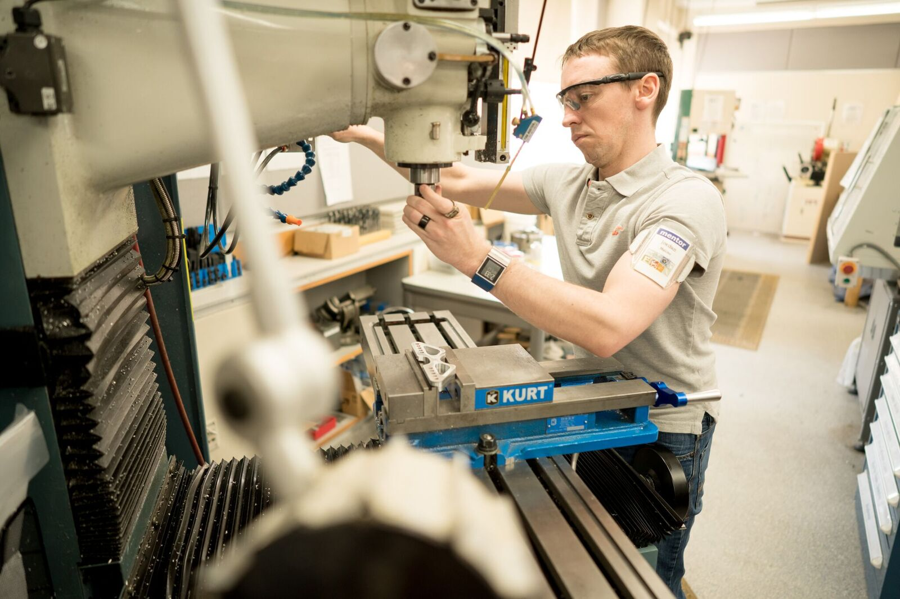
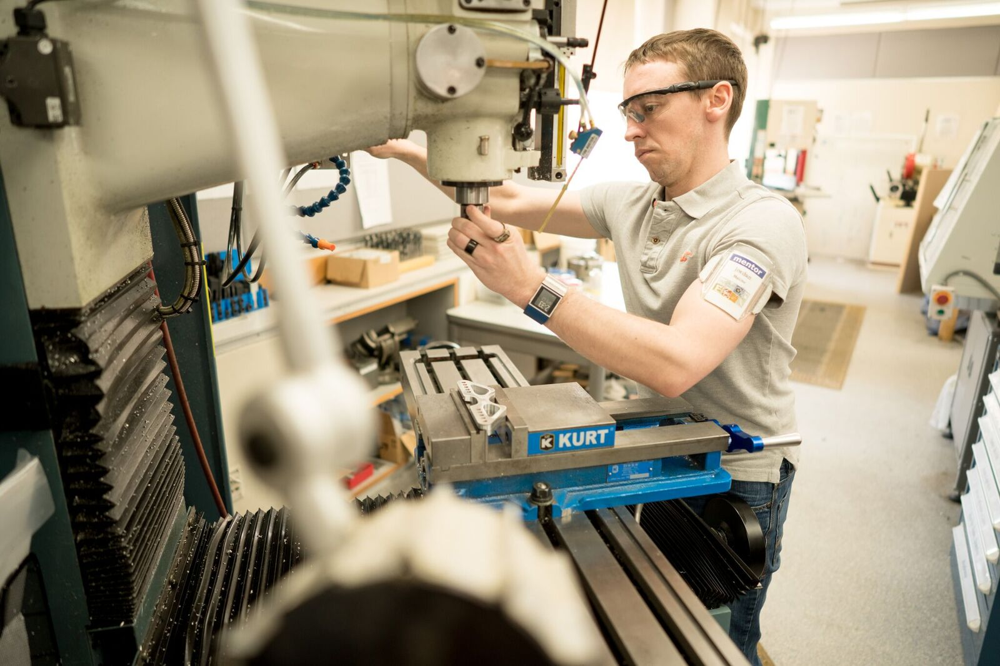

MIT continually develops organizations and partnerships that foster interdisciplinary work. Listed here are just some of the MIT labs, centers, and programs where groundbreaking research is happening every day.

MIT researchers have devised a miniaturized system that can deliver tiny quantities of medicine to brain regions as small as 1 cubic millimeter.
MIT researchers collaborate with many leading local, national, and international organizations to further drive exploration.
Researchers from MIT and the Charles Stark Draper Laboratory are developing a new space boot with built-in sensors and tiny “haptic” motors, whose vibrations can guide the wearer around or over obstacles.
 



Massachusetts Institute of Technology
77 Massachusetts Avenue, Cambridge, MA, USA
Visit
Map
Events
People
Careers
Contact
Privacy
Accessibility
Social Media Hub